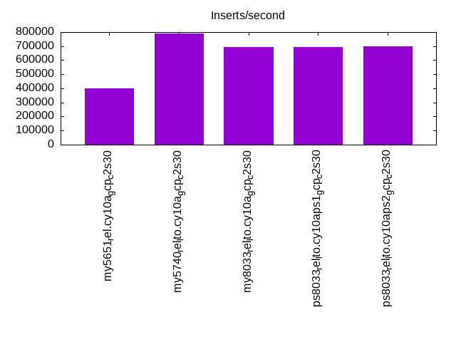
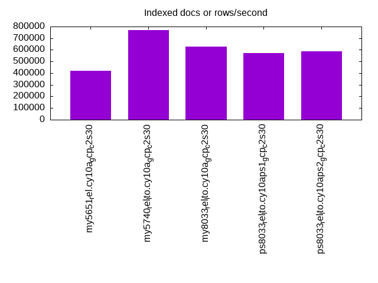
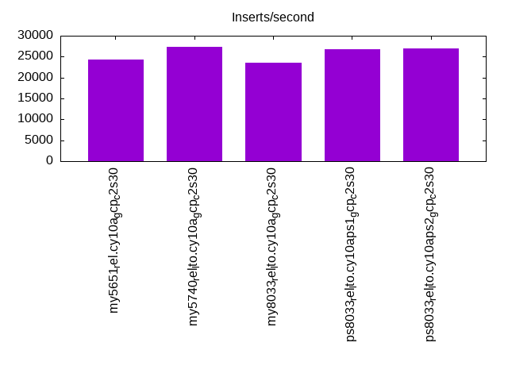
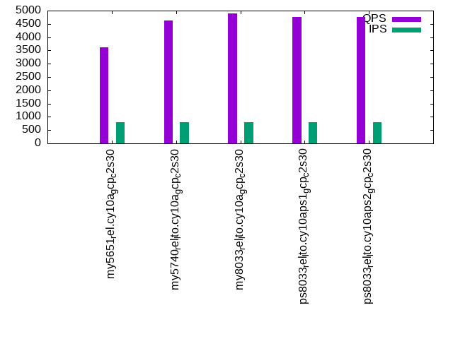
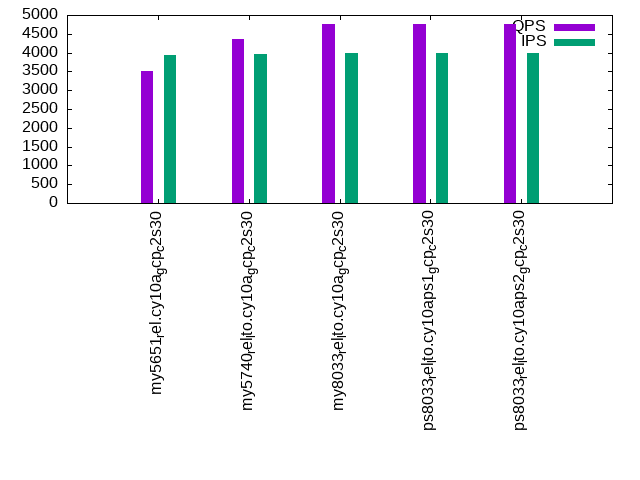
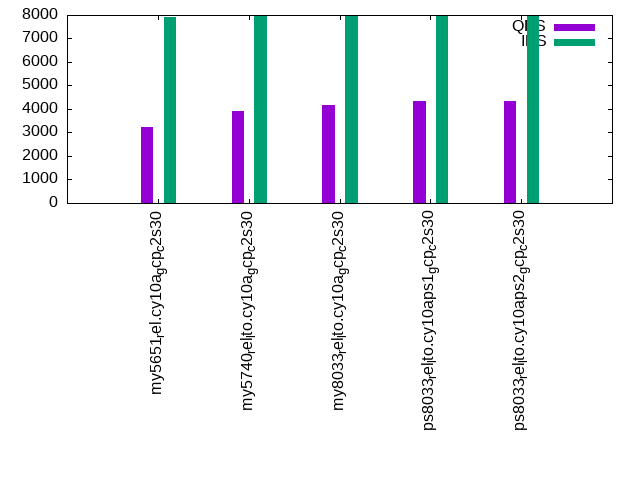

This is a report for the insert benchmark with 4000M docs and 8 client(s). It is generated by scripts (bash, awk, sed) and Tufte might not be impressed. An overview of the insert benchmark is here and a short update is here. Below, by DBMS, I mean DBMS+version.config. An example is my8020.c10b40 where my means MySQL, 8020 is version 8.0.20 and c10b40 is the name for the configuration file.
The test server is a c2-standard-30 from GCP with 15 cores, hyperthreads disabled, 120G RAM, XFS + SW RAID 0 on 4 NVMe devices (1.5TB). The benchmark was run with 8 client and there were 1 or 3 connections per client (1 for queries or inserts without rate limits, 1+1 for rate limited inserts+deletes). There are 8 tables, client per table. It loads 500M rows without secondary indexes, creates secondary indexes, then inserts 50M rows with a delete per insert to avoid growing the table. It then does 3 read+write tests for 7200s each that do queries as fast as possible with 100, 500 and then 1000 inserts/second/client concurrent with the queries and 1000 deletes/second to avoid growing the table. The database is larger than memory.
The tested DBMS are:
The numbers are inserts/s for l.i0 and l.i1, indexed docs (or rows) /s for l.x and queries/s for q*.2. The values are the average rate over the entire test for inserts (IPS) and queries (QPS). The range of values for IPS and QPS is split into 3 parts: bottom 25%, middle 50%, top 25%. Values in the bottom 25% have a red background, values in the top 25% have a green background and values in the middle have no color. A gray background is used for values that can be ignored because the DBMS did not sustain the target insert rate. Red backgrounds are not used when the minimum value is within 80% of the max value.
| dbms | l.i0 | l.x | l.i1 | q100.1 | q500.1 | q1000.1 |
|---|---|---|---|---|---|---|
| my5651_rel.cy10a_gcp_c2s30 | 400681 | 420178 | 24337 | 3627 | 3522 | 3216 |
| my5740_rel_lto.cy10a_gcp_c2s30 | 788333 | 767774 | 27412 | 4634 | 4372 | 3903 |
| my8033_rel_lto.cy10a_gcp_c2s30 | 695531 | 629838 | 23567 | 4894 | 4763 | 4154 |
| ps8033_rel_lto.cy10aps1_gcp_c2s30 | 691563 | 573656 | 26679 | 4748 | 4773 | 4341 |
| ps8033_rel_lto.cy10aps2_gcp_c2s30 | 698080 | 585495 | 26938 | 4767 | 4762 | 4326 |
This table has relative throughput, throughput for the DBMS relative to the DBMS in the first line, using the absolute throughput from the previous table. Values less than 0.95 have a yellow background. Values greater than 1.05 have a blue background.
| dbms | l.i0 | l.x | l.i1 | q100.1 | q500.1 | q1000.1 |
|---|---|---|---|---|---|---|
| my5651_rel.cy10a_gcp_c2s30 | 1.00 | 1.00 | 1.00 | 1.00 | 1.00 | 1.00 |
| my5740_rel_lto.cy10a_gcp_c2s30 | 1.97 | 1.83 | 1.13 | 1.28 | 1.24 | 1.21 |
| my8033_rel_lto.cy10a_gcp_c2s30 | 1.74 | 1.50 | 0.97 | 1.35 | 1.35 | 1.29 |
| ps8033_rel_lto.cy10aps1_gcp_c2s30 | 1.73 | 1.37 | 1.10 | 1.31 | 1.36 | 1.35 |
| ps8033_rel_lto.cy10aps2_gcp_c2s30 | 1.74 | 1.39 | 1.11 | 1.31 | 1.35 | 1.35 |
This lists the average rate of inserts/s for the tests that do inserts concurrent with queries. For such tests the query rate is listed in the table above. The read+write tests are setup so that the insert rate should match the target rate every second. Cells that are not at least 95% of the target have a red background to indicate a failure to satisfy the target.
| dbms | q100.1 | q500.1 | q1000.1 |
|---|---|---|---|
| my5651_rel.cy10a_gcp_c2s30 | 788 | 3933 | 7914 |
| my5740_rel_lto.cy10a_gcp_c2s30 | 788 | 3971 | 7940 |
| my8033_rel_lto.cy10a_gcp_c2s30 | 790 | 3978 | 7952 |
| ps8033_rel_lto.cy10aps1_gcp_c2s30 | 790 | 3977 | 7955 |
| ps8033_rel_lto.cy10aps2_gcp_c2s30 | 790 | 3980 | 7958 |
| target | 800 | 4000 | 8000 |
l.i0: load without secondary indexes. Graphs for performance per 1-second interval are here.
Average throughput:
Insert response time histogram: each cell has the percentage of responses that take <= the time in the header and max is the max response time in seconds. For the max column values in the top 25% of the range have a red background and in the bottom 25% of the range have a green background. The red background is not used when the min value is within 80% of the max value.
| dbms | 256us | 1ms | 4ms | 16ms | 64ms | 256ms | 1s | 4s | 16s | gt | max |
|---|---|---|---|---|---|---|---|---|---|---|---|
| my5651_rel.cy10a_gcp_c2s30 | 0.173 | 99.451 | 0.182 | 0.179 | 0.015 | nonzero | 0.279 | ||||
| my5740_rel_lto.cy10a_gcp_c2s30 | 84.133 | 15.791 | 0.045 | 0.016 | 0.014 | 0.001 | 0.521 | ||||
| my8033_rel_lto.cy10a_gcp_c2s30 | 3.143 | 96.757 | 0.068 | 0.017 | 0.014 | 0.001 | 0.508 | ||||
| ps8033_rel_lto.cy10aps1_gcp_c2s30 | 2.456 | 97.446 | 0.065 | 0.020 | 0.013 | 0.001 | 0.316 | ||||
| ps8033_rel_lto.cy10aps2_gcp_c2s30 | 5.084 | 94.818 | 0.067 | 0.016 | 0.014 | nonzero | 0.301 |
Performance metrics for the DBMS listed above. Some are normalized by throughput, others are not. Legend for results is here.
ips qps rps rmbps wps wmbps rpq rkbpq wpi wkbpi csps cpups cspq cpupq dbgb1 dbgb2 rss maxop p50 p99 tag 400681 0 3144 12.3 1905.4 112.3 0.008 0.031 0.005 0.287 85698 43.1 0.214 16 263.1 391.6 85.7 0.279 50645 39657 4000m.my5651_rel.cy10a_gcp_c2s30 788333 0 0 0.0 3797.6 221.6 0.000 0.000 0.005 0.288 81322 73.9 0.103 14 263.1 391.6 86.8 0.521 101523 77015 4000m.my5740_rel_lto.cy10a_gcp_c2s30 695531 0 0 0.0 3649.7 199.6 0.000 0.000 0.005 0.294 226248 77.1 0.325 17 262.1 390.7 86.9 0.508 89403 68925 4000m.my8033_rel_lto.cy10a_gcp_c2s30 691563 0 0 0.0 3519.0 195.6 0.000 0.000 0.005 0.290 218170 77.0 0.315 17 262.1 390.7 86.9 0.316 88803 67327 4000m.ps8033_rel_lto.cy10aps1_gcp_c2s30 698080 0 0 0.0 3551.5 194.5 0.000 0.000 0.005 0.285 231541 77.2 0.332 17 262.1 390.7 86.9 0.301 89402 69158 4000m.ps8033_rel_lto.cy10aps2_gcp_c2s30
l.x: create secondary indexes.
Average throughput:
Performance metrics for the DBMS listed above. Some are normalized by throughput, others are not. Legend for results is here.
ips qps rps rmbps wps wmbps rpq rkbpq wpi wkbpi csps cpups cspq cpupq dbgb1 dbgb2 rss maxop p50 p99 tag 420178 0 2533 362.9 5060.5 528.6 0.006 0.884 0.012 1.288 16211 33.6 0.039 12 542.2 670.7 86.2 0.001 NA NA 4000m.my5651_rel.cy10a_gcp_c2s30 767774 0 4049 673.2 7727.9 859.5 0.005 0.898 0.010 1.146 27558 30.0 0.036 6 588.3 716.8 87.3 0.032 NA NA 4000m.my5740_rel_lto.cy10a_gcp_c2s30 629838 0 7938 691.9 13394.9 803.7 0.013 1.125 0.021 1.307 52484 56.4 0.083 13 586.1 714.7 87.0 0.004 NA NA 4000m.my8033_rel_lto.cy10a_gcp_c2s30 573656 0 7299 614.9 11745.0 738.9 0.013 1.098 0.020 1.319 50149 59.9 0.087 16 586.1 714.7 87.1 0.004 NA NA 4000m.ps8033_rel_lto.cy10aps1_gcp_c2s30 585495 0 7430 625.0 11861.5 764.5 0.013 1.093 0.020 1.337 50109 61.1 0.086 16 586.1 714.7 87.1 0.014 NA NA 4000m.ps8033_rel_lto.cy10aps2_gcp_c2s30
l.i1: continue load after secondary indexes created. Graphs for performance per 1-second interval are here.
Average throughput:
Insert response time histogram: each cell has the percentage of responses that take <= the time in the header and max is the max response time in seconds. For the max column values in the top 25% of the range have a red background and in the bottom 25% of the range have a green background. The red background is not used when the min value is within 80% of the max value.
| dbms | 256us | 1ms | 4ms | 16ms | 64ms | 256ms | 1s | 4s | 16s | gt | max |
|---|---|---|---|---|---|---|---|---|---|---|---|
| my5651_rel.cy10a_gcp_c2s30 | 0.375 | 71.391 | 25.857 | 2.361 | 0.016 | nonzero | nonzero | nonzero | 16.256 | ||
| my5740_rel_lto.cy10a_gcp_c2s30 | 1.785 | 77.103 | 18.698 | 2.398 | 0.016 | nonzero | nonzero | 14.511 | |||
| my8033_rel_lto.cy10a_gcp_c2s30 | 0.241 | 70.090 | 26.762 | 2.886 | 0.021 | 0.447 | |||||
| ps8033_rel_lto.cy10aps1_gcp_c2s30 | 1.033 | 81.240 | 15.490 | 1.763 | 0.474 | 0.001 | 2.191 | ||||
| ps8033_rel_lto.cy10aps2_gcp_c2s30 | 1.074 | 80.643 | 15.271 | 2.877 | 0.134 | nonzero | 1.055 |
Delete response time histogram: each cell has the percentage of responses that take <= the time in the header and max is the max response time in seconds. For the max column values in the top 25% of the range have a red background and in the bottom 25% of the range have a green background. The red background is not used when the min value is within 80% of the max value.
| dbms | 256us | 1ms | 4ms | 16ms | 64ms | 256ms | 1s | 4s | 16s | gt | max |
|---|---|---|---|---|---|---|---|---|---|---|---|
| my5651_rel.cy10a_gcp_c2s30 | 1.231 | 75.793 | 22.900 | 0.076 | nonzero | nonzero | nonzero | nonzero | 16.185 | ||
| my5740_rel_lto.cy10a_gcp_c2s30 | 7.626 | 79.783 | 12.517 | 0.073 | nonzero | 0.308 | |||||
| my8033_rel_lto.cy10a_gcp_c2s30 | 4.392 | 77.040 | 18.116 | 0.435 | 0.018 | 0.500 | |||||
| ps8033_rel_lto.cy10aps1_gcp_c2s30 | 5.892 | 82.229 | 11.302 | 0.440 | 0.136 | 0.001 | 2.168 | ||||
| ps8033_rel_lto.cy10aps2_gcp_c2s30 | 5.925 | 82.594 | 10.933 | 0.439 | 0.108 | nonzero | 1.090 |
Performance metrics for the DBMS listed above. Some are normalized by throughput, others are not. Legend for results is here.
ips qps rps rmbps wps wmbps rpq rkbpq wpi wkbpi csps cpups cspq cpupq dbgb1 dbgb2 rss maxop p50 p99 tag 24337 0 13348 199.3 25295.5 618.6 0.548 8.386 1.039 26.030 150939 43.7 6.202 269 837.0 1026.0 85.7 16.256 3646 250 4000m.my5651_rel.cy10a_gcp_c2s30 27412 0 14427 225.4 28126.9 663.0 0.526 8.421 1.026 24.768 140415 51.7 5.122 283 837.1 1026.8 87.3 14.511 4295 300 4000m.my5740_rel_lto.cy10a_gcp_c2s30 23567 0 13333 208.3 25956.0 622.3 0.566 9.052 1.101 27.041 198966 61.5 8.443 391 833.4 1023.8 87.0 0.447 3346 300 4000m.my8033_rel_lto.cy10a_gcp_c2s30 26679 0 13465 210.4 22260.0 662.2 0.505 8.075 0.834 25.418 197501 63.7 7.403 358 834.4 1024.8 87.0 2.191 3746 250 4000m.ps8033_rel_lto.cy10aps1_gcp_c2s30 26938 0 14039 219.4 23156.4 680.7 0.521 8.339 0.860 25.874 207527 64.0 7.704 356 833.9 1024.1 87.0 1.055 3846 300 4000m.ps8033_rel_lto.cy10aps2_gcp_c2s30
q100.1: range queries with 100 insert/s per client. Graphs for performance per 1-second interval are here.
Average throughput:
Query response time histogram: each cell has the percentage of responses that take <= the time in the header and max is the max response time in seconds. For max values in the top 25% of the range have a red background and in the bottom 25% of the range have a green background. The red background is not used when the min value is within 80% of the max value.
| dbms | 256us | 1ms | 4ms | 16ms | 64ms | 256ms | 1s | 4s | 16s | gt | max |
|---|---|---|---|---|---|---|---|---|---|---|---|
| my5651_rel.cy10a_gcp_c2s30 | 39.996 | 2.338 | 40.010 | 17.639 | 0.017 | nonzero | nonzero | 0.321 | |||
| my5740_rel_lto.cy10a_gcp_c2s30 | 41.880 | 0.408 | 54.203 | 3.505 | 0.004 | nonzero | 0.225 | ||||
| my8033_rel_lto.cy10a_gcp_c2s30 | 39.742 | 2.947 | 54.991 | 2.293 | 0.027 | 0.001 | 0.222 | ||||
| ps8033_rel_lto.cy10aps1_gcp_c2s30 | 39.746 | 3.012 | 55.933 | 1.278 | 0.018 | 0.013 | nonzero | 0.664 | |||
| ps8033_rel_lto.cy10aps2_gcp_c2s30 | 39.842 | 2.921 | 55.686 | 1.516 | 0.031 | 0.004 | nonzero | 0.282 |
Insert response time histogram: each cell has the percentage of responses that take <= the time in the header and max is the max response time in seconds. For max values in the top 25% of the range have a red background and in the bottom 25% of the range have a green background. The red background is not used when the min value is within 80% of the max value.
| dbms | 256us | 1ms | 4ms | 16ms | 64ms | 256ms | 1s | 4s | 16s | gt | max |
|---|---|---|---|---|---|---|---|---|---|---|---|
| my5651_rel.cy10a_gcp_c2s30 | 31.187 | 67.795 | 1.016 | 0.002 | 0.068 | ||||||
| my5740_rel_lto.cy10a_gcp_c2s30 | 76.779 | 23.086 | 0.120 | 0.016 | 0.182 | ||||||
| my8033_rel_lto.cy10a_gcp_c2s30 | 59.472 | 39.415 | 0.998 | 0.114 | 0.001 | 0.256 | |||||
| ps8033_rel_lto.cy10aps1_gcp_c2s30 | 56.208 | 42.904 | 0.577 | 0.298 | 0.013 | 0.398 | |||||
| ps8033_rel_lto.cy10aps2_gcp_c2s30 | 59.265 | 39.907 | 0.622 | 0.206 | 0.001 | 0.333 |
Delete response time histogram: each cell has the percentage of responses that take <= the time in the header and max is the max response time in seconds. For max values in the top 25% of the range have a red background and in the bottom 25% of the range have a green background. The red background is not used when the min value is within 80% of the max value.
| dbms | 256us | 1ms | 4ms | 16ms | 64ms | 256ms | 1s | 4s | 16s | gt | max |
|---|---|---|---|---|---|---|---|---|---|---|---|
| my5651_rel.cy10a_gcp_c2s30 | 36.118 | 62.796 | 1.086 | 0.059 | |||||||
| my5740_rel_lto.cy10a_gcp_c2s30 | 81.159 | 18.740 | 0.095 | 0.007 | 0.174 | ||||||
| my8033_rel_lto.cy10a_gcp_c2s30 | 62.487 | 36.600 | 0.846 | 0.067 | 0.218 | ||||||
| ps8033_rel_lto.cy10aps1_gcp_c2s30 | 57.280 | 42.003 | 0.472 | 0.227 | 0.017 | 0.663 | |||||
| ps8033_rel_lto.cy10aps2_gcp_c2s30 | 61.497 | 37.831 | 0.535 | 0.137 | 0.001 | 0.332 |
Performance metrics for the DBMS listed above. Some are normalized by throughput, others are not. Legend for results is here.
ips qps rps rmbps wps wmbps rpq rkbpq wpi wkbpi csps cpups cspq cpupq dbgb1 dbgb2 rss maxop p50 p99 tag 788 3627 26970 421.1 17325.3 368.8 7.436 118.884 22.000 479.500 112965 22.4 31.146 926 837.0 1026.0 85.8 0.321 464 320 4000m.my5651_rel.cy10a_gcp_c2s30 788 4634 34448 538.3 16444.9 457.7 7.434 118.946 20.882 595.108 121784 19.0 26.282 615 837.1 1026.8 87.0 0.225 607 384 4000m.my5740_rel_lto.cy10a_gcp_c2s30 790 4894 35335 552.1 17791.2 450.4 7.220 115.519 22.523 583.824 152165 23.4 31.092 717 833.4 1024.2 87.0 0.222 639 336 4000m.my8033_rel_lto.cy10a_gcp_c2s30 790 4748 33518 523.7 14707.2 410.1 7.059 112.947 18.628 531.929 142904 22.3 30.096 704 834.4 1025.2 87.0 0.664 608 368 4000m.ps8033_rel_lto.cy10aps1_gcp_c2s30 790 4767 33664 526.0 14808.2 412.6 7.062 112.994 18.737 534.622 143889 22.3 30.186 702 833.9 1024.5 87.0 0.282 623 352 4000m.ps8033_rel_lto.cy10aps2_gcp_c2s30
q500.1: range queries with 500 insert/s per client. Graphs for performance per 1-second interval are here.
Average throughput:
Query response time histogram: each cell has the percentage of responses that take <= the time in the header and max is the max response time in seconds. For max values in the top 25% of the range have a red background and in the bottom 25% of the range have a green background. The red background is not used when the min value is within 80% of the max value.
| dbms | 256us | 1ms | 4ms | 16ms | 64ms | 256ms | 1s | 4s | 16s | gt | max |
|---|---|---|---|---|---|---|---|---|---|---|---|
| my5651_rel.cy10a_gcp_c2s30 | 40.087 | 1.815 | 38.859 | 19.225 | 0.014 | 0.001 | nonzero | 0.284 | |||
| my5740_rel_lto.cy10a_gcp_c2s30 | 41.635 | 0.528 | 51.518 | 6.316 | 0.003 | 0.001 | 0.203 | ||||
| my8033_rel_lto.cy10a_gcp_c2s30 | 39.497 | 3.146 | 54.046 | 3.309 | 0.001 | nonzero | 0.191 | ||||
| ps8033_rel_lto.cy10aps1_gcp_c2s30 | 39.174 | 3.488 | 56.299 | 1.027 | 0.002 | 0.011 | nonzero | 0.299 | |||
| ps8033_rel_lto.cy10aps2_gcp_c2s30 | 38.998 | 3.628 | 56.176 | 1.185 | 0.013 | 0.001 | nonzero | 0.442 |
Insert response time histogram: each cell has the percentage of responses that take <= the time in the header and max is the max response time in seconds. For max values in the top 25% of the range have a red background and in the bottom 25% of the range have a green background. The red background is not used when the min value is within 80% of the max value.
| dbms | 256us | 1ms | 4ms | 16ms | 64ms | 256ms | 1s | 4s | 16s | gt | max |
|---|---|---|---|---|---|---|---|---|---|---|---|
| my5651_rel.cy10a_gcp_c2s30 | 58.780 | 41.117 | 0.103 | nonzero | 0.147 | ||||||
| my5740_rel_lto.cy10a_gcp_c2s30 | 85.928 | 14.054 | 0.018 | 0.029 | |||||||
| my8033_rel_lto.cy10a_gcp_c2s30 | 79.221 | 20.676 | 0.103 | 0.045 | |||||||
| ps8033_rel_lto.cy10aps1_gcp_c2s30 | 81.485 | 18.414 | 0.079 | 0.022 | nonzero | 0.299 | |||||
| ps8033_rel_lto.cy10aps2_gcp_c2s30 | 79.261 | 20.600 | 0.133 | 0.006 | 0.236 |
Delete response time histogram: each cell has the percentage of responses that take <= the time in the header and max is the max response time in seconds. For max values in the top 25% of the range have a red background and in the bottom 25% of the range have a green background. The red background is not used when the min value is within 80% of the max value.
| dbms | 256us | 1ms | 4ms | 16ms | 64ms | 256ms | 1s | 4s | 16s | gt | max |
|---|---|---|---|---|---|---|---|---|---|---|---|
| my5651_rel.cy10a_gcp_c2s30 | 65.123 | 34.713 | 0.164 | nonzero | 0.131 | ||||||
| my5740_rel_lto.cy10a_gcp_c2s30 | 90.381 | 9.588 | 0.032 | 0.038 | |||||||
| my8033_rel_lto.cy10a_gcp_c2s30 | 86.604 | 13.302 | 0.094 | 0.045 | |||||||
| ps8033_rel_lto.cy10aps1_gcp_c2s30 | 87.345 | 12.569 | 0.063 | 0.023 | 0.170 | ||||||
| ps8033_rel_lto.cy10aps2_gcp_c2s30 | 85.640 | 14.237 | 0.117 | 0.006 | 0.161 |
Performance metrics for the DBMS listed above. Some are normalized by throughput, others are not. Legend for results is here.
ips qps rps rmbps wps wmbps rpq rkbpq wpi wkbpi csps cpups cspq cpupq dbgb1 dbgb2 rss maxop p50 p99 tag 3933 3522 25914 403.4 19620.4 398.9 7.358 117.273 4.988 103.839 112476 22.0 31.934 937 837.0 1026.0 85.8 0.284 448 400 4000m.my5651_rel.cy10a_gcp_c2s30 3971 4372 32080 501.3 18035.7 478.4 7.338 117.406 4.542 123.365 116616 20.1 26.674 690 837.1 1026.8 86.9 0.203 544 495 4000m.my5740_rel_lto.cy10a_gcp_c2s30 3978 4763 33711 526.7 20020.7 483.9 7.078 113.244 5.033 124.578 153328 25.0 32.192 787 833.4 1026.4 87.0 0.191 591 527 4000m.my8033_rel_lto.cy10a_gcp_c2s30 3977 4773 32987 515.4 16142.0 451.9 6.911 110.570 4.059 116.359 147570 24.6 30.915 773 834.4 1027.5 87.0 0.299 607 511 4000m.ps8033_rel_lto.cy10aps1_gcp_c2s30 3980 4762 32968 515.1 16184.7 452.7 6.924 110.781 4.067 116.495 147856 24.6 31.052 775 833.9 1026.7 87.0 0.442 592 543 4000m.ps8033_rel_lto.cy10aps2_gcp_c2s30
q1000.1: range queries with 1000 insert/s per client. Graphs for performance per 1-second interval are here.
Average throughput:
Query response time histogram: each cell has the percentage of responses that take <= the time in the header and max is the max response time in seconds. For max values in the top 25% of the range have a red background and in the bottom 25% of the range have a green background. The red background is not used when the min value is within 80% of the max value.
| dbms | 256us | 1ms | 4ms | 16ms | 64ms | 256ms | 1s | 4s | 16s | gt | max |
|---|---|---|---|---|---|---|---|---|---|---|---|
| my5651_rel.cy10a_gcp_c2s30 | 39.031 | 1.443 | 35.524 | 23.961 | 0.038 | 0.003 | nonzero | 0.687 | |||
| my5740_rel_lto.cy10a_gcp_c2s30 | 40.209 | 0.694 | 48.057 | 11.016 | 0.022 | 0.002 | nonzero | 0.769 | |||
| my8033_rel_lto.cy10a_gcp_c2s30 | 36.466 | 4.759 | 50.820 | 7.928 | 0.026 | 0.001 | 0.219 | ||||
| ps8033_rel_lto.cy10aps1_gcp_c2s30 | 35.596 | 5.701 | 55.968 | 2.658 | 0.059 | 0.019 | nonzero | 0.320 | |||
| ps8033_rel_lto.cy10aps2_gcp_c2s30 | 35.838 | 5.442 | 55.356 | 3.277 | 0.084 | 0.003 | nonzero | 0.482 |
Insert response time histogram: each cell has the percentage of responses that take <= the time in the header and max is the max response time in seconds. For max values in the top 25% of the range have a red background and in the bottom 25% of the range have a green background. The red background is not used when the min value is within 80% of the max value.
| dbms | 256us | 1ms | 4ms | 16ms | 64ms | 256ms | 1s | 4s | 16s | gt | max |
|---|---|---|---|---|---|---|---|---|---|---|---|
| my5651_rel.cy10a_gcp_c2s30 | 40.542 | 59.084 | 0.360 | 0.014 | 0.200 | ||||||
| my5740_rel_lto.cy10a_gcp_c2s30 | 68.328 | 31.521 | 0.140 | 0.011 | 0.221 | ||||||
| my8033_rel_lto.cy10a_gcp_c2s30 | 53.437 | 45.783 | 0.772 | 0.007 | 0.113 | ||||||
| ps8033_rel_lto.cy10aps1_gcp_c2s30 | 64.237 | 35.328 | 0.368 | 0.067 | 0.237 | ||||||
| ps8033_rel_lto.cy10aps2_gcp_c2s30 | 69.430 | 30.109 | 0.439 | 0.022 | nonzero | 0.348 |
Delete response time histogram: each cell has the percentage of responses that take <= the time in the header and max is the max response time in seconds. For max values in the top 25% of the range have a red background and in the bottom 25% of the range have a green background. The red background is not used when the min value is within 80% of the max value.
| dbms | 256us | 1ms | 4ms | 16ms | 64ms | 256ms | 1s | 4s | 16s | gt | max |
|---|---|---|---|---|---|---|---|---|---|---|---|
| my5651_rel.cy10a_gcp_c2s30 | 47.913 | 51.674 | 0.400 | 0.013 | 0.178 | ||||||
| my5740_rel_lto.cy10a_gcp_c2s30 | 76.621 | 23.216 | 0.154 | 0.009 | 0.183 | ||||||
| my8033_rel_lto.cy10a_gcp_c2s30 | 65.153 | 34.148 | 0.692 | 0.006 | 0.101 | ||||||
| ps8033_rel_lto.cy10aps1_gcp_c2s30 | 74.038 | 25.602 | 0.295 | 0.065 | 0.242 | ||||||
| ps8033_rel_lto.cy10aps2_gcp_c2s30 | 78.736 | 20.867 | 0.378 | 0.019 | 0.210 |
Performance metrics for the DBMS listed above. Some are normalized by throughput, others are not. Legend for results is here.
ips qps rps rmbps wps wmbps rpq rkbpq wpi wkbpi csps cpups cspq cpupq dbgb1 dbgb2 rss maxop p50 p99 tag 7914 3216 25171 390.2 23349.9 470.1 7.827 124.257 2.950 60.822 122500 25.1 38.092 1171 837.0 1026.0 85.8 0.687 400 336 4000m.my5651_rel.cy10a_gcp_c2s30 7940 3903 29771 465.2 21394.4 526.8 7.628 122.051 2.694 67.934 122255 25.1 31.325 965 837.1 1026.8 86.9 0.769 495 416 4000m.my5740_rel_lto.cy10a_gcp_c2s30 7952 4154 30708 479.8 23364.8 531.5 7.393 118.291 2.938 68.445 158275 31.1 38.106 1123 833.4 1030.9 87.0 0.219 512 448 4000m.my8033_rel_lto.cy10a_gcp_c2s30 7955 4341 31535 492.7 18582.3 523.2 7.264 116.230 2.336 67.351 155618 31.4 35.848 1085 834.4 1031.9 87.0 0.320 544 432 4000m.ps8033_rel_lto.cy10aps1_gcp_c2s30 7958 4326 31539 492.8 18669.9 524.8 7.291 116.650 2.346 67.535 156104 31.0 36.086 1075 833.9 1031.2 87.0 0.482 544 288 4000m.ps8033_rel_lto.cy10aps2_gcp_c2s30
l.i0: load without secondary indexes
Performance metrics for all DBMS, not just the ones listed above. Some are normalized by throughput, others are not. Legend for results is here.
ips qps rps rmbps wps wmbps rpq rkbpq wpi wkbpi csps cpups cspq cpupq dbgb1 dbgb2 rss maxop p50 p99 tag 400681 0 3144 12.3 1905.4 112.3 0.008 0.031 0.005 0.287 85698 43.1 0.214 16 263.1 391.6 85.7 0.279 50645 39657 4000m.my5651_rel.cy10a_gcp_c2s30 788333 0 0 0.0 3797.6 221.6 0.000 0.000 0.005 0.288 81322 73.9 0.103 14 263.1 391.6 86.8 0.521 101523 77015 4000m.my5740_rel_lto.cy10a_gcp_c2s30 695531 0 0 0.0 3649.7 199.6 0.000 0.000 0.005 0.294 226248 77.1 0.325 17 262.1 390.7 86.9 0.508 89403 68925 4000m.my8033_rel_lto.cy10a_gcp_c2s30 691563 0 0 0.0 3519.0 195.6 0.000 0.000 0.005 0.290 218170 77.0 0.315 17 262.1 390.7 86.9 0.316 88803 67327 4000m.ps8033_rel_lto.cy10aps1_gcp_c2s30 698080 0 0 0.0 3551.5 194.5 0.000 0.000 0.005 0.285 231541 77.2 0.332 17 262.1 390.7 86.9 0.301 89402 69158 4000m.ps8033_rel_lto.cy10aps2_gcp_c2s30
l.x: create secondary indexes
Performance metrics for all DBMS, not just the ones listed above. Some are normalized by throughput, others are not. Legend for results is here.
ips qps rps rmbps wps wmbps rpq rkbpq wpi wkbpi csps cpups cspq cpupq dbgb1 dbgb2 rss maxop p50 p99 tag 420178 0 2533 362.9 5060.5 528.6 0.006 0.884 0.012 1.288 16211 33.6 0.039 12 542.2 670.7 86.2 0.001 NA NA 4000m.my5651_rel.cy10a_gcp_c2s30 767774 0 4049 673.2 7727.9 859.5 0.005 0.898 0.010 1.146 27558 30.0 0.036 6 588.3 716.8 87.3 0.032 NA NA 4000m.my5740_rel_lto.cy10a_gcp_c2s30 629838 0 7938 691.9 13394.9 803.7 0.013 1.125 0.021 1.307 52484 56.4 0.083 13 586.1 714.7 87.0 0.004 NA NA 4000m.my8033_rel_lto.cy10a_gcp_c2s30 573656 0 7299 614.9 11745.0 738.9 0.013 1.098 0.020 1.319 50149 59.9 0.087 16 586.1 714.7 87.1 0.004 NA NA 4000m.ps8033_rel_lto.cy10aps1_gcp_c2s30 585495 0 7430 625.0 11861.5 764.5 0.013 1.093 0.020 1.337 50109 61.1 0.086 16 586.1 714.7 87.1 0.014 NA NA 4000m.ps8033_rel_lto.cy10aps2_gcp_c2s30
l.i1: continue load after secondary indexes created
Performance metrics for all DBMS, not just the ones listed above. Some are normalized by throughput, others are not. Legend for results is here.
ips qps rps rmbps wps wmbps rpq rkbpq wpi wkbpi csps cpups cspq cpupq dbgb1 dbgb2 rss maxop p50 p99 tag 24337 0 13348 199.3 25295.5 618.6 0.548 8.386 1.039 26.030 150939 43.7 6.202 269 837.0 1026.0 85.7 16.256 3646 250 4000m.my5651_rel.cy10a_gcp_c2s30 27412 0 14427 225.4 28126.9 663.0 0.526 8.421 1.026 24.768 140415 51.7 5.122 283 837.1 1026.8 87.3 14.511 4295 300 4000m.my5740_rel_lto.cy10a_gcp_c2s30 23567 0 13333 208.3 25956.0 622.3 0.566 9.052 1.101 27.041 198966 61.5 8.443 391 833.4 1023.8 87.0 0.447 3346 300 4000m.my8033_rel_lto.cy10a_gcp_c2s30 26679 0 13465 210.4 22260.0 662.2 0.505 8.075 0.834 25.418 197501 63.7 7.403 358 834.4 1024.8 87.0 2.191 3746 250 4000m.ps8033_rel_lto.cy10aps1_gcp_c2s30 26938 0 14039 219.4 23156.4 680.7 0.521 8.339 0.860 25.874 207527 64.0 7.704 356 833.9 1024.1 87.0 1.055 3846 300 4000m.ps8033_rel_lto.cy10aps2_gcp_c2s30
q100.1: range queries with 100 insert/s per client
Performance metrics for all DBMS, not just the ones listed above. Some are normalized by throughput, others are not. Legend for results is here.
ips qps rps rmbps wps wmbps rpq rkbpq wpi wkbpi csps cpups cspq cpupq dbgb1 dbgb2 rss maxop p50 p99 tag 788 3627 26970 421.1 17325.3 368.8 7.436 118.884 22.000 479.500 112965 22.4 31.146 926 837.0 1026.0 85.8 0.321 464 320 4000m.my5651_rel.cy10a_gcp_c2s30 788 4634 34448 538.3 16444.9 457.7 7.434 118.946 20.882 595.108 121784 19.0 26.282 615 837.1 1026.8 87.0 0.225 607 384 4000m.my5740_rel_lto.cy10a_gcp_c2s30 790 4894 35335 552.1 17791.2 450.4 7.220 115.519 22.523 583.824 152165 23.4 31.092 717 833.4 1024.2 87.0 0.222 639 336 4000m.my8033_rel_lto.cy10a_gcp_c2s30 790 4748 33518 523.7 14707.2 410.1 7.059 112.947 18.628 531.929 142904 22.3 30.096 704 834.4 1025.2 87.0 0.664 608 368 4000m.ps8033_rel_lto.cy10aps1_gcp_c2s30 790 4767 33664 526.0 14808.2 412.6 7.062 112.994 18.737 534.622 143889 22.3 30.186 702 833.9 1024.5 87.0 0.282 623 352 4000m.ps8033_rel_lto.cy10aps2_gcp_c2s30
q500.1: range queries with 500 insert/s per client
Performance metrics for all DBMS, not just the ones listed above. Some are normalized by throughput, others are not. Legend for results is here.
ips qps rps rmbps wps wmbps rpq rkbpq wpi wkbpi csps cpups cspq cpupq dbgb1 dbgb2 rss maxop p50 p99 tag 3933 3522 25914 403.4 19620.4 398.9 7.358 117.273 4.988 103.839 112476 22.0 31.934 937 837.0 1026.0 85.8 0.284 448 400 4000m.my5651_rel.cy10a_gcp_c2s30 3971 4372 32080 501.3 18035.7 478.4 7.338 117.406 4.542 123.365 116616 20.1 26.674 690 837.1 1026.8 86.9 0.203 544 495 4000m.my5740_rel_lto.cy10a_gcp_c2s30 3978 4763 33711 526.7 20020.7 483.9 7.078 113.244 5.033 124.578 153328 25.0 32.192 787 833.4 1026.4 87.0 0.191 591 527 4000m.my8033_rel_lto.cy10a_gcp_c2s30 3977 4773 32987 515.4 16142.0 451.9 6.911 110.570 4.059 116.359 147570 24.6 30.915 773 834.4 1027.5 87.0 0.299 607 511 4000m.ps8033_rel_lto.cy10aps1_gcp_c2s30 3980 4762 32968 515.1 16184.7 452.7 6.924 110.781 4.067 116.495 147856 24.6 31.052 775 833.9 1026.7 87.0 0.442 592 543 4000m.ps8033_rel_lto.cy10aps2_gcp_c2s30
q1000.1: range queries with 1000 insert/s per client
Performance metrics for all DBMS, not just the ones listed above. Some are normalized by throughput, others are not. Legend for results is here.
ips qps rps rmbps wps wmbps rpq rkbpq wpi wkbpi csps cpups cspq cpupq dbgb1 dbgb2 rss maxop p50 p99 tag 7914 3216 25171 390.2 23349.9 470.1 7.827 124.257 2.950 60.822 122500 25.1 38.092 1171 837.0 1026.0 85.8 0.687 400 336 4000m.my5651_rel.cy10a_gcp_c2s30 7940 3903 29771 465.2 21394.4 526.8 7.628 122.051 2.694 67.934 122255 25.1 31.325 965 837.1 1026.8 86.9 0.769 495 416 4000m.my5740_rel_lto.cy10a_gcp_c2s30 7952 4154 30708 479.8 23364.8 531.5 7.393 118.291 2.938 68.445 158275 31.1 38.106 1123 833.4 1030.9 87.0 0.219 512 448 4000m.my8033_rel_lto.cy10a_gcp_c2s30 7955 4341 31535 492.7 18582.3 523.2 7.264 116.230 2.336 67.351 155618 31.4 35.848 1085 834.4 1031.9 87.0 0.320 544 432 4000m.ps8033_rel_lto.cy10aps1_gcp_c2s30 7958 4326 31539 492.8 18669.9 524.8 7.291 116.650 2.346 67.535 156104 31.0 36.086 1075 833.9 1031.2 87.0 0.482 544 288 4000m.ps8033_rel_lto.cy10aps2_gcp_c2s30
Insert response time histogram
256us 1ms 4ms 16ms 64ms 256ms 1s 4s 16s gt max tag 0.000 0.173 99.451 0.182 0.179 0.015 nonzero 0.000 0.000 0.000 0.279 my5651_rel.cy10a_gcp_c2s30 0.000 84.133 15.791 0.045 0.016 0.014 0.001 0.000 0.000 0.000 0.521 my5740_rel_lto.cy10a_gcp_c2s30 0.000 3.143 96.757 0.068 0.017 0.014 0.001 0.000 0.000 0.000 0.508 my8033_rel_lto.cy10a_gcp_c2s30 0.000 2.456 97.446 0.065 0.020 0.013 0.001 0.000 0.000 0.000 0.316 ps8033_rel_lto.cy10aps1_gcp_c2s30 0.000 5.084 94.818 0.067 0.016 0.014 nonzero 0.000 0.000 0.000 0.301 ps8033_rel_lto.cy10aps2_gcp_c2s30
TODO - determine whether there is data for create index response time
Insert response time histogram
256us 1ms 4ms 16ms 64ms 256ms 1s 4s 16s gt max tag 0.000 0.000 0.375 71.391 25.857 2.361 0.016 nonzero nonzero nonzero 16.256 my5651_rel.cy10a_gcp_c2s30 0.000 0.000 1.785 77.103 18.698 2.398 0.016 nonzero nonzero 0.000 14.511 my5740_rel_lto.cy10a_gcp_c2s30 0.000 0.000 0.241 70.090 26.762 2.886 0.021 0.000 0.000 0.000 0.447 my8033_rel_lto.cy10a_gcp_c2s30 0.000 0.000 1.033 81.240 15.490 1.763 0.474 0.001 0.000 0.000 2.191 ps8033_rel_lto.cy10aps1_gcp_c2s30 0.000 0.000 1.074 80.643 15.271 2.877 0.134 nonzero 0.000 0.000 1.055 ps8033_rel_lto.cy10aps2_gcp_c2s30
Delete response time histogram
256us 1ms 4ms 16ms 64ms 256ms 1s 4s 16s gt max tag 0.000 0.000 1.231 75.793 22.900 0.076 nonzero nonzero nonzero nonzero 16.185 my5651_rel.cy10a_gcp_c2s30 0.000 0.000 7.626 79.783 12.517 0.073 nonzero 0.000 0.000 0.000 0.308 my5740_rel_lto.cy10a_gcp_c2s30 0.000 0.000 4.392 77.040 18.116 0.435 0.018 0.000 0.000 0.000 0.500 my8033_rel_lto.cy10a_gcp_c2s30 0.000 0.000 5.892 82.229 11.302 0.440 0.136 0.001 0.000 0.000 2.168 ps8033_rel_lto.cy10aps1_gcp_c2s30 0.000 0.000 5.925 82.594 10.933 0.439 0.108 nonzero 0.000 0.000 1.090 ps8033_rel_lto.cy10aps2_gcp_c2s30
Query response time histogram
256us 1ms 4ms 16ms 64ms 256ms 1s 4s 16s gt max tag 39.996 2.338 40.010 17.639 0.017 nonzero nonzero 0.000 0.000 0.000 0.321 my5651_rel.cy10a_gcp_c2s30 41.880 0.408 54.203 3.505 0.004 nonzero 0.000 0.000 0.000 0.000 0.225 my5740_rel_lto.cy10a_gcp_c2s30 39.742 2.947 54.991 2.293 0.027 0.001 0.000 0.000 0.000 0.000 0.222 my8033_rel_lto.cy10a_gcp_c2s30 39.746 3.012 55.933 1.278 0.018 0.013 nonzero 0.000 0.000 0.000 0.664 ps8033_rel_lto.cy10aps1_gcp_c2s30 39.842 2.921 55.686 1.516 0.031 0.004 nonzero 0.000 0.000 0.000 0.282 ps8033_rel_lto.cy10aps2_gcp_c2s30
Insert response time histogram
256us 1ms 4ms 16ms 64ms 256ms 1s 4s 16s gt max tag 0.000 0.000 31.187 67.795 1.016 0.002 0.000 0.000 0.000 0.000 0.068 my5651_rel.cy10a_gcp_c2s30 0.000 0.000 76.779 23.086 0.120 0.016 0.000 0.000 0.000 0.000 0.182 my5740_rel_lto.cy10a_gcp_c2s30 0.000 0.000 59.472 39.415 0.998 0.114 0.001 0.000 0.000 0.000 0.256 my8033_rel_lto.cy10a_gcp_c2s30 0.000 0.000 56.208 42.904 0.577 0.298 0.013 0.000 0.000 0.000 0.398 ps8033_rel_lto.cy10aps1_gcp_c2s30 0.000 0.000 59.265 39.907 0.622 0.206 0.001 0.000 0.000 0.000 0.333 ps8033_rel_lto.cy10aps2_gcp_c2s30
Delete response time histogram
256us 1ms 4ms 16ms 64ms 256ms 1s 4s 16s gt max tag 0.000 0.000 36.118 62.796 1.086 0.000 0.000 0.000 0.000 0.000 0.059 my5651_rel.cy10a_gcp_c2s30 0.000 0.000 81.159 18.740 0.095 0.007 0.000 0.000 0.000 0.000 0.174 my5740_rel_lto.cy10a_gcp_c2s30 0.000 0.000 62.487 36.600 0.846 0.067 0.000 0.000 0.000 0.000 0.218 my8033_rel_lto.cy10a_gcp_c2s30 0.000 0.000 57.280 42.003 0.472 0.227 0.017 0.000 0.000 0.000 0.663 ps8033_rel_lto.cy10aps1_gcp_c2s30 0.000 0.000 61.497 37.831 0.535 0.137 0.001 0.000 0.000 0.000 0.332 ps8033_rel_lto.cy10aps2_gcp_c2s30
Query response time histogram
256us 1ms 4ms 16ms 64ms 256ms 1s 4s 16s gt max tag 40.087 1.815 38.859 19.225 0.014 0.001 nonzero 0.000 0.000 0.000 0.284 my5651_rel.cy10a_gcp_c2s30 41.635 0.528 51.518 6.316 0.003 0.001 0.000 0.000 0.000 0.000 0.203 my5740_rel_lto.cy10a_gcp_c2s30 39.497 3.146 54.046 3.309 0.001 nonzero 0.000 0.000 0.000 0.000 0.191 my8033_rel_lto.cy10a_gcp_c2s30 39.174 3.488 56.299 1.027 0.002 0.011 nonzero 0.000 0.000 0.000 0.299 ps8033_rel_lto.cy10aps1_gcp_c2s30 38.998 3.628 56.176 1.185 0.013 0.001 nonzero 0.000 0.000 0.000 0.442 ps8033_rel_lto.cy10aps2_gcp_c2s30
Insert response time histogram
256us 1ms 4ms 16ms 64ms 256ms 1s 4s 16s gt max tag 0.000 0.000 58.780 41.117 0.103 nonzero 0.000 0.000 0.000 0.000 0.147 my5651_rel.cy10a_gcp_c2s30 0.000 0.000 85.928 14.054 0.018 0.000 0.000 0.000 0.000 0.000 0.029 my5740_rel_lto.cy10a_gcp_c2s30 0.000 0.000 79.221 20.676 0.103 0.000 0.000 0.000 0.000 0.000 0.045 my8033_rel_lto.cy10a_gcp_c2s30 0.000 0.000 81.485 18.414 0.079 0.022 nonzero 0.000 0.000 0.000 0.299 ps8033_rel_lto.cy10aps1_gcp_c2s30 0.000 0.000 79.261 20.600 0.133 0.006 0.000 0.000 0.000 0.000 0.236 ps8033_rel_lto.cy10aps2_gcp_c2s30
Delete response time histogram
256us 1ms 4ms 16ms 64ms 256ms 1s 4s 16s gt max tag 0.000 0.000 65.123 34.713 0.164 nonzero 0.000 0.000 0.000 0.000 0.131 my5651_rel.cy10a_gcp_c2s30 0.000 0.000 90.381 9.588 0.032 0.000 0.000 0.000 0.000 0.000 0.038 my5740_rel_lto.cy10a_gcp_c2s30 0.000 0.000 86.604 13.302 0.094 0.000 0.000 0.000 0.000 0.000 0.045 my8033_rel_lto.cy10a_gcp_c2s30 0.000 0.000 87.345 12.569 0.063 0.023 0.000 0.000 0.000 0.000 0.170 ps8033_rel_lto.cy10aps1_gcp_c2s30 0.000 0.000 85.640 14.237 0.117 0.006 0.000 0.000 0.000 0.000 0.161 ps8033_rel_lto.cy10aps2_gcp_c2s30
Query response time histogram
256us 1ms 4ms 16ms 64ms 256ms 1s 4s 16s gt max tag 39.031 1.443 35.524 23.961 0.038 0.003 nonzero 0.000 0.000 0.000 0.687 my5651_rel.cy10a_gcp_c2s30 40.209 0.694 48.057 11.016 0.022 0.002 nonzero 0.000 0.000 0.000 0.769 my5740_rel_lto.cy10a_gcp_c2s30 36.466 4.759 50.820 7.928 0.026 0.001 0.000 0.000 0.000 0.000 0.219 my8033_rel_lto.cy10a_gcp_c2s30 35.596 5.701 55.968 2.658 0.059 0.019 nonzero 0.000 0.000 0.000 0.320 ps8033_rel_lto.cy10aps1_gcp_c2s30 35.838 5.442 55.356 3.277 0.084 0.003 nonzero 0.000 0.000 0.000 0.482 ps8033_rel_lto.cy10aps2_gcp_c2s30
Insert response time histogram
256us 1ms 4ms 16ms 64ms 256ms 1s 4s 16s gt max tag 0.000 0.000 40.542 59.084 0.360 0.014 0.000 0.000 0.000 0.000 0.200 my5651_rel.cy10a_gcp_c2s30 0.000 0.000 68.328 31.521 0.140 0.011 0.000 0.000 0.000 0.000 0.221 my5740_rel_lto.cy10a_gcp_c2s30 0.000 0.000 53.437 45.783 0.772 0.007 0.000 0.000 0.000 0.000 0.113 my8033_rel_lto.cy10a_gcp_c2s30 0.000 0.000 64.237 35.328 0.368 0.067 0.000 0.000 0.000 0.000 0.237 ps8033_rel_lto.cy10aps1_gcp_c2s30 0.000 0.000 69.430 30.109 0.439 0.022 nonzero 0.000 0.000 0.000 0.348 ps8033_rel_lto.cy10aps2_gcp_c2s30
Delete response time histogram
256us 1ms 4ms 16ms 64ms 256ms 1s 4s 16s gt max tag 0.000 0.000 47.913 51.674 0.400 0.013 0.000 0.000 0.000 0.000 0.178 my5651_rel.cy10a_gcp_c2s30 0.000 0.000 76.621 23.216 0.154 0.009 0.000 0.000 0.000 0.000 0.183 my5740_rel_lto.cy10a_gcp_c2s30 0.000 0.000 65.153 34.148 0.692 0.006 0.000 0.000 0.000 0.000 0.101 my8033_rel_lto.cy10a_gcp_c2s30 0.000 0.000 74.038 25.602 0.295 0.065 0.000 0.000 0.000 0.000 0.242 ps8033_rel_lto.cy10aps1_gcp_c2s30 0.000 0.000 78.736 20.867 0.378 0.019 0.000 0.000 0.000 0.000 0.210 ps8033_rel_lto.cy10aps2_gcp_c2s30